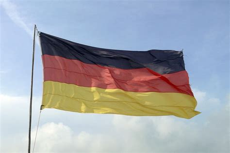

3606 Arvid Hansson Rothovius (Rooth)
* 1615 Kexholm, Finland
† 1670 Pälkene, Finland
Kyrkoherde i Pälkene
Blev högst 55 år
* 1615 Kexholm, Finland
† 1670 Pälkene, Finland
Kyrkoherde i Pälkene
Blev högst 55 år
7212 Hans Birgersson Rooth
* 1580 Hedenstorp, Angelstad (G)
† 1628 Jama, Ingermanland, Ryssland
Fästningskommendant i Ingermanland
Blev högst 48 år
* 1580 Hedenstorp, Angelstad (G)
† 1628 Jama, Ingermanland, Ryssland
Fästningskommendant i Ingermanland
Blev högst 48 år
14424 Birger (Börje) Laurentzen (Larsson) Roth
* 1542 Hedenstorp, Angelstad (G)
† omkring 1610 Hedenstorp, Angelstad (G)
Bonde i Angelstad
Blev ca 68 år
* 1542 Hedenstorp, Angelstad (G)
† omkring 1610 Hedenstorp, Angelstad (G)
Bonde i Angelstad
Blev ca 68 år

28848 Kapten Laurentz Rothof (Roth)
* 1520 Germany
† Hedenstorp, Angelstad (G)
Officer i svenska arme'n
* 1520 Germany
† Hedenstorp, Angelstad (G)
Officer i svenska arme'n
14425 Anna Eriksdotter
* omkring 1550 Angelstad (G)
* omkring 1550 Angelstad (G)
7213 Elin Bengtsdotter
* omkring 1580 Viborg, Finland
† 1655 Kexholm, Finland
Blev ca 75 år
* omkring 1580 Viborg, Finland
† 1655 Kexholm, Finland
Blev ca 75 år
14426 Bengt Arvidsson
* 1545
† 1587 Kexholm, Finland
Länsfogde i Kexholm
Blev högst 42 år
* 1545
† 1587 Kexholm, Finland
Länsfogde i Kexholm
Blev högst 42 år